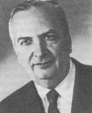
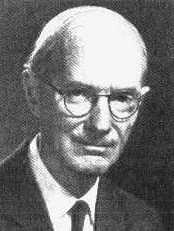
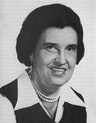
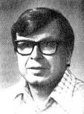
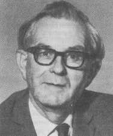
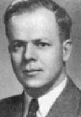
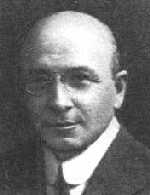
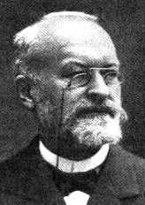
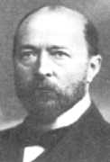

IMMUNOLOGISTS - NOBEL PRIZE WINNERS
W H O I S T H E N E X T O N E ?..
?
1996

The prize was awarded jointly to: PETER C. DOHERTY and ROLF M. ZINKERNAGEL for their discoveries concerning the specificity of the cell mediated immune defence.
1987

SUSUMU TONEGAWA for his discovery of the genetic principle for generation of antibody diversity.
1984


The prize was awarded jointly to: NIELS K. JERNE , GEORGES J.F. KOHLER and CESAR MILSTEIN for theories concerning the specificity in development and control of the immune system and the discovery of the principle for production of monoclonal antibodies.
1980



The prize was awarded jointly to: BARUJ BENACERRAF, JEAN DAUSSET and GEORGE D. SNELL for their discoveries concerning genetically determined structures on the cell surface that regulate immunological reactions.
1977

The prize was divided equally, one half awarded to: ROSALYN YALOW for the development of radioimmunoassays of peptide hormones .

The prize was awarded jointly to: BARUCH S. BLUMBERG and D. CARLETON GAJDUSEK for their discoveries concerning new mechanisms for the origin and dissemination of infectious diseases.
1972

The prize was awarded jointly to: GERALD M. EDELMAN and RODNEY R. PORTER for their discoveries concerning the chemical structure of antibodies.
1960


The prize was awarded jointly to: SIR FRANK MACFARLANE BURNET and SIR PETER BRIAN MEDAWAR for discovery of acquired immunological tolerance.
1954



The prize was awarded jointly to: JOHN FRANKLIN ENDERS, THOMAS HUCKLE WELLER and FREDERICK CHAPMAN ROBBINS for their discovery of the ability of poliomyelitis viruses to grow in cultures of various types of tissue, which was essential for immune prophylaxis of these disease.
1951

MAX THEILER for his discoveries concerning yellow fever and how to combat it (vaccination) .
1930

KARL LANDSTEINER for his discovery of human blood groups.
1927

JULIUS WAGNER-JAUREGG for his discovery of the therapeutic value of malaria inoculation in the treatment of dementia paralytica. (in fact, the phenomenon of cytokine immunostimulation)
1919

JULES BORDET for his discoveries relating to immunity (complement) .
1913

CHARLES ROBERT RICHET in recognition of his work on anaphylaxis.
1912

ALEXIS CARREL in recognition of his work on vascular suture and the transplantation of blood-vessels and organs .


The prize was awarded jointly to: ILYA ILYICH MECHNIKOV and PAUL EHRLICH in recognition of their work on immunity.

CHARLES LOUIS ALPHONSE LAVERAN in recognition of his work on the role played by protozoa in causing diseases.
1905

ROBERT KOCH for his investigations and discoveries in relation to tuberculosis.

SIR RONALD ROSS for his work on malaria.

EMIL ADOLF VON BEHRING for his work on serum therapy, especially its application against diphtheria, by which he has opened a new road in the domain of medical science and thereby placed in the hands of the physician a victorious weapon against illness and deaths.